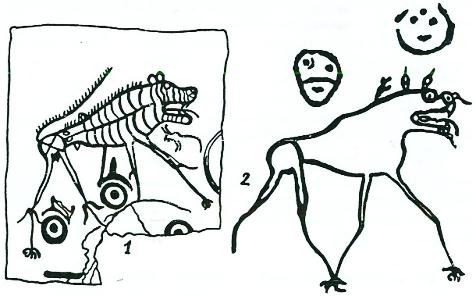
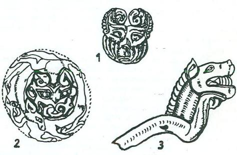

Kurdun, Wu-sun Kralının oğlunu emzirmesi : (Wu-sun'lar, M. Ö. 174 den önce Çin'in batısındaki Kansu Eyaletinde oturuyorlardı. Batılarında da, yine kuvvetli bir devlet olan Yüe-çi'ler vardı. Yüe-çi'ler, M. Ö. 174 den önce Büyük Hun Devletinin meşhur hükümdarı Mao-tun (Mete) ve az sonra da oğlu tarafından mağlup edilince, yurtlarını bırakıp Batı Türkistan’a gitmek ve orada Kuşan devletini kurmak zorunda kaldılar.

Şekil 3: Kırgız Türklerinin bölgesinde bulunmuş Kurt- Tanrı, Gök ve yıldızlar (E. B. Badetskaya'dan)
M. Ö. 140 senelerinde sonra da, daha doğuda yaşayan Wu-sun'lar batıya kaymışlar ve bilhassa bugünkü Tanrı dağları bölgesinde, Yüe-çi'lerin boş bıraktıkları yerlere yerleşmişlerdi. M.Ö.119 senelerinden önce, Çin kaynaklarının verdikleri haberlere göre,- Hun hükümdarı Wu-sun Kralına hücum etmiş ve onu öldürmüştü. Haberlerin elimize biraz daha geç gelmiş olmasına rağmen, bu olayın daha önce meydana gelmiş olabileceği de düşünülebilir. İşte Çin tarihleri bu olayı anlatmaya başlarlarken, şöyle bir hikâyeyi de araya sıkıştırmaktan geri durmazlar:
"Wu-sun'ların Kralına Kun-mo derler. İşittiğimize göre, bu kralın babasının, Hunların batı sınırında küçük bir devleti varmış. Hun hükümdarı, bu Wu-sun Kralına taarruz etmiş ve Kun-mo'nun babası olan bu kralı öldürmüş. Kun-mo da, o sıralarda çok küçükmüş. Hun Hükümdarı ona kıyamamış. Çöle atılmasını ve ölümü ile kalımının, kendi kaderine bırakılmasını emretmiş. Çocuk çölde emeklerken, üzerinde bir karga dolaşmış ve gagasında tuttuğu eti, ona yavaşça yaklaşarak vermiş ve uzaklaşmış.
Az sonra çocuğun etrafında, bu defa da bir dişi kurt dolaşmaya başlamış. Kurt da çocuğa yanaşarak memesini çocuğun ağzına vermiş ve iyice emzirdikten sonra yine oradan uzaklaşmış. Bütün bu olan biten şeyleri, Hun Hükümdarı da uzaktan seyredermiş. Bunları görünce, çocuğun kutsal bir yavru olduğunu anlamış ve hemen alıp adamlarına vermiş. İyi bir bakımla da büyütülmesini emretmiş. Çocuk büyüyerek bir yiğit olmuş. Hun Hükümdarı da onu ordularından birine komutan yapmış. Gittikçe gelişen ve başarı kazanan çocuğa gönül bağlayan Hun Hükümdarı, babasının eski devletini ona vererek, onu Wu-sun Kralı yapmış..."
Tarihin eski ve karanlık çağlarından bir uğultu ile gelen bu mitolojik ses, bize böylece Orta Asya’daki ilk Kurt efsanesini haber veriyordu. Dikkat edilirse efsaneye sebep olan olaylar, Büyük Hun Devleti içinde geçmiş ve yine bu devletle ilgili tarih haberleri içinde yer almıştır. (De Groot, II, s. 23)
M. S. 400 senelerinde, Ortaasya'nın doğusunda ve batısında yeni devletler kurulmuş ve Ortaasya'nın siyasî çehresi biraz değişmişti. Ortaasya'nın güney-batı bozkırlarında yaşayan, Moğol ırkından bazı kabileler harekete geçmiş ve Çin'in Batı bölgeleri ile kuzeyini ele geçirmeye muvaffak olmuşlardı. Bu yeni devletin adına Çinliler Juan-Juan derlerdi. Juan-juan adlı bir kabile grubuna veya bu adı taşıyan bir halka, bu devletin kuruluşundan önce pek rastlamıyoruz. Tabii olarak Çinliler, bu devletin adını Çin işaretleri ile yazıyorlardı. Çin işaretlerini, yalnızca telâffuzlarına göre okursak, bu devletin adını Juan-juan diye okumamız gerekmektedir. Çince işaretlerin ifade ettikleri anlama bakacak olursak, o zaman da hayret etmemek elden gelmeyecektir. Çünkü bu işaretlerin manası, "küçük, küçük böcekler ve küçük, kötü kurtlar" anlamına geliyordu. Çinliler, bu devletin adını ifade etmek için, bu manayı kapsayan böyle işaretleri niçin seçmişlerdi? Bunun üzerinde de durulmamış değildir. Bir defa Çinliler, kendinden olmayan, bilhassa Kuzeyli kavimleri küçük ve hakir görürlerdi. Üstelik de, Juan-juan devletini kuran kavimler, geri ve iptidai Proto-Moğol kabilelerinden başka kimseler değillerdi. Belki bir Çinli için, böyle bir devleti, böyle işaretlerle ifade etmek, normal bir şey sayılabilirdi. Bütün bunlara rağmen, bunların yanında, kafamızı kurcalayan bazı anlayış ve kültür meseleleri de yok değildir.
Biliyoruz ki eski Türkler, şimdi kurt dediğimiz yırtıcı ve vahşi hayvana böri derlerdi. Dikkat edilecek olunursa, bugünkü kurt sözümüzün de iki anlamı vardır. Türkler, yırtıcı ve korkunç kurdun yanında, "küçük böceklere" de kurt derlerdi. Kurt sözünün, böyle iki ayrı ve zıt manaya sahip olmasının sebebi nedir? Orta Asya’da 150 sene egemen olmuş bir imparatorluğa, Çinliler niçin "küçük kurt" adını vermişlerdi? Ortaya koyduğumuz bu sorular, ortaya atılmış ve söylenmiştir. Fakat bunun gerçek sebebi de, henüz daha açıklanmış değildir. Bu da, Türk düşünce tarihinin karanlık kalan bir bölümüdür.
Juan-juan devleti, Çin'in batısındaki Kansu'dan temellerini alarak kuzeye doğru inkişaf etmiş ve Çin'in kuzeyindeki Proto-Moğolları buyruğu altında birleştirmişti. Orta Asya İmparatorluklarında çok önemli bir inanış vardı. Orta Asya’yı hâkimiyeti altına alan bir devlet, başkent olarak, Göktürklerin Ötügen ve Çingiz-Han çağında da Kara-Korum denen bölgeyi seçmek zorunda idi. Çünkü burası kutsal bir yerdi. Orta Asya egemenliği ancak bu görevi yerine getirmekle tamamlanırdı. Juan-juan devleti kurulduktan sonra, Çin'deki Toba Sülâlesi ile mücadelelere girmiş ve Tanrı dağları bölgesindeki Türk halkları üzerinde de üstünlüğünü bir an için kurmuştu.
Orta Asya'nın batısında ise, yine V. asrın başlarında yeni bir devlet kurulmuştu. Bu devlete Batı kaynakları Ak-Hun, İslâm kaynakları ise Eftalit, Heyâtile v. s. gibi adlar verirlerdi. Bu devlet de, Sir-Derya nehrinin doğusunda, Çinlilerin Hua diye adlandırdığı, yine göçebe kabileler tarafından kurulmuştu. Az zamanda Batı Türkistan'da gelişen bu devlet, sınırlarını süratle Afganistan ve daha sonra da Hindistan'ın kuzeyine kadar indirmişti.
İşte, doğuda Juan-juan ve Batıda da Ak-Hun devletleri arasında kalan Orta Asya’daki Türk halkları, zaman zaman bu iki kuvvet arasında muvazene aramış; bazen birine, bazen da diğerine tâbi olmuş ve çoğu zaman da müstakil bir devlet olmasalar bile, bir kuvvet olarak kendini hissettirmişlerdi. Çinliler, o çağdaki bu Orta Asya Türk kabilelerine, genel bir ad olarak, Kao-çı adını veriyorlardı. Çince de Kao-çı demek, "Yüksek tekerlekli arabalara sahip olan" kavimler demekti. Öyle anlaşılıyor ki bu kavimler, Çinlilere ve hatta Çinlilerin çok iyi tanıdıkları, Moğollara ve Juan-juan'lara nazaran, daha değişik tipte, tekerlekleri çok yüksek olan arabalar kullanıyorlardı. Bir arabanın tekerleklerinin büyük olması, o arabaya birçok bakımlardan avantaj sağlardı. Ayrıca büyük tekerlek yapmak, kolay bir iş de değildi. Büyük tekerleklerin yapımı, seçkin ustalar isteyen ve aynı zamanda, az çok ilerlemiş bir teknik bilgi gerektiren bir işti.
Kao-çı'lar hakkında, Çin kaynaklarında özel olarak yazılmış ve pek kısa da olmayan güzel bir monoğrafya vardır. Bu monoğrafya, Rusça da dâhil hiç bir Batı diline tam olarak tercüme edilmemiştir. Kao-çı'lar hakkındaki bu önemli bölümün tam olarak tercümesi tarafımızdan yapılmış ve Türk Tarih Kurumu Belleten'inin 1957 senesine ait cildinde neşredilmiştir. Bu konuda fazla bilgi almak isteyenler, bu yazıya müracaat edebilirler. Bu yazıda da görüleceği üzere Kao-çı'lar, Orhun nehrinden başlayıp, Güney Rusya'da Volga nehrine kadar uzanan, büyük bir kavimler topluluğu idiler. Bu topluluktan, M.S. 552 senesinde, Göktürk devleti meydana gelecektir. Kao-çı'Iara Çinliler, aynı zamanda T'ieh-le adını da verirlerdi. Bunun da herhalde, sonradan Türk kavimleri arasında çok önemli bir yer tutan, Töliş veya Tölös kabilelerinin Çince ile bozulmuş bir şeklinden başka bir şey olmaması çok muhtemeldi.
Kao-çı (Töles)'ların kültürü: Yukarıda bu adla anılan kavimlerin Orhun nehri kıyılarından, Güney Rusya'ya kadar uzadıklarını söylemiştik. Bu sebeple, bu kadar geniş sahalara yayılmış olan kabile grupları arasında bir kültür birliği görmek çok zordur. Bununla beraber, onları bağlayan bazı müşterek kültür özellikleri de vardı. 429 senesinden sonra, bilhassa Batı gruplarında, bunların göçebeliği bırakıp ziraat hayatına dönenlerini çok görüyoruz. Büyük sürek avları, diğer Türk devletlerinde olduğu gibi, bunlarda da görülüyordu, öyle anlaşılıyor ki, aralarında müşterek dinî törenleri de vardı. Meselâ 450 yılından sonra, bunların beş büyük grubu bir araya gelerek büyük din törenleri yapmışlardı. Bu tören sırasında bilhassa göğe verilen kurbanlar başta geliyordu. Bunların yanında, başka kutsal ruhlara da birçok at kurbanları verilmişti. Bu Türk kavimlerinin bilhassa önemli olan özelliklerinden birisi de şarkıları idi. Onların şarkıları, tıpkı kurt ulumalarını andırırmış. Bunun sebebi de, atalarının kurt olmasıymış. Bizim düşüncemize göre, bu şarkılar, daha ziyade "uzun hava" veya "maya" tipinde şarkılardı. Bunun için de bu müzik, Çinlilere biraz garip gelmiş ve bu şarkıları kurt ulumalarına benzetmişlerdi. İşte yukarıda söylediğimiz bu büyük din töreninde de, bu tip şarkılardan bol bol söylenmişti. Birçok kabilelerin bir araya gelerek büyük din törenlerinin yapılması, bize bunlarda müşterek ve büyük bir devlet dininin var olduğunu göstermektedir. Çünkü Şamanizm, daha ziyade kişiler, aileler veyahut da, ancak bir kabile içinde hükmü geçen bir din sistemidir. Sihir, büyü, fal gibi kişileri ilgilendiren meseleler, şamanlara düşen başlıca vazifelerdi. Hatta bu çağda ve yine aynı Türk kavimleri içinde, kadın şamanları da görüyoruz. Fakat devletin düzenlediği büyük devlet törenlerinde, büyük rahip (Pontifex Maximum), bizzat hükümdarın kendisi idi. Şamanlar belki de onlara, yalnızca yardım ediyorlardı.
Diğer Türk kavimleri gibi bunlar da ölülerini, atları ve silâhları ile birlikte gömerlerdi. Kadınları da süs olarak, boynuz veya kemikle yapılmış uzun külâhlar, yani bogtak'lar giyerlerdi. Düğünlerde bol bol et yendiği ve kımız içildiği de Çin kaynaklarından anlaşılmaktadır. "Göğe ok atmak" da, onların adetlerindendi. Sonraki tarihlerde, böyle göğe ok atma ve bağırmaların, daha ziyade şimşekli havalarda yapıldığını görüyoruz. Fakat bizce bu âdetin Tanrıya, bir haber veya elçi gönderilmesi yerinde yapılmış olması çok daha muhtemeldir.
Kao-çıların kurttan türeyiş efsaneleri: Sonradan Göktürk ve Uygur devletlerini kuracak olan bu Türk topluluklarının en yakın Çinli komşuları, Toba Sülâlesi idi. 519 senesine kadar da bağımsız bir hükümdarları vardı. Bu sebeple bu Türk toplulukları ile ilgili türeyiş efsanesini, yine Toba çağı kaynaklarında buluyoruz. Efsane şöyledir:
"Kao-çı Kağan’ının çok akıllı iki kızı varmış. (Bazı kaynaklar üç kızı vardı, diyorlar). Bu kızlar o kadar akıllı ve o kadar iyi imişler ki, babaları şöyle bir karara varma zorunda kalmış. Kağan demiş ki: "Ben bu kızları, nasıl insanlarla evlendirebilirim! Bunlar o kadar iyi ki, bu kızlar ancak Tanrı ile evlenebilirler!" Bunu diyen Kağan, kızlarını alarak götürmüş ve bir tepenin başına koymuş. Burada kızları, Tanrı ile evlensinler diye beklemiş. Kızlar bu tepede Tanrıyı bekleye durmuşlar. Aradan epey zaman geçmiş. Ama ne Tanrı gelmiş ve ne de onlarla evlenmiş, Kızlar böyle bekleşe dururlarken, tepenin etrafında, ihtiyar ve erkek bir kurt görünmüş. Kurt, tepenin etrafında dolaşmağa başlamış ve bir türlü de, orasını bırakıp gitmemiş. (Küçük) kız kurdun bu durumunu görünce şüphelenmiş ve kardeşine: "işte bu kurt Tanrının ta kendisidir. Ben inip, onunla evleneceğim," demiş. Kardeşi, gitme, diye ısrar etmiş ama kız dinlememiş. Tepeden inerek kurtla evlenmiş ve bu suretle Kao-çı halkı, bu hükümdarın kızı ile kurttan türemiş".
Burada Kağan unvanını biz ilâve ettik. Henüz daha bu çağda Türkler arasında, Kağan unvanı yoktu. Bu kurt efsanesi, biraz daha değişik bir tiptedir. Buradaki kurt, erkektir. Diğer Göktürk efsanelerinde ise, kurt dişidir. Bununla beraber Uygur harfleri ile yazılmış Oğuz Destanı'ndaki kurt da, erkektir. Hükümdarın kendi kızlarını koyduğu dağdan Çin kaynakları, bir tepe diye bahsetmektedirler. Türk dininde "Kutsal Dağ" ve "Gök Dağı", büyük bir yer tutardı. Ergenekon da böyle kutsal bir dağdan başka bir şey değildi. Esasen Ergenekon efsanesi ile ilgili bölümümüzde, böyle kutsal dağlar ile "Demir Dağ" hakkında yapılmış özel bir araştırmamız vardır. Bu efsanede Kutsal mağara, noksan gibi görülüyor. Fakat kurdun, dağın eteklerinde dolaşması, oralarda yatıp kalkması, kızında aşağı inip kurtla orada evlenmesi, bir nevi kutsal dağın kapısı olan mağara motifini de tamamlamış gibidir. Esasen, efsanenin bu kısmı noksandır. Kızla kurt nerede yaşamışlar ve nerede türemişlerdir. Bu durum tamamen karanlıktır.
Bu efsaneyi T.T.K. Belleten'in 81. sayısında neşretmiştik. Bu metinlerin tercümeleri, bizden önce de, bizden sonra da bir kaç defa yapılmıştır. Bir metni gramer kaidelerine riayet ederek tercüme etmek marifet değildir. Bu metinleri yüz küsur sene önce Rusça ‘ya tercüme eden Yakinef'in de dediği gibi: "önemli olan, metnin ruhuna varmak ve yazarın o çağdaki düşüncesine inerek, ne demek istediğini anlamaktır".
Bu sebeple 150 sene önce yapılan Rusça tercümeler, 1957 de yapılan Almanca tercümelerden çok daha iyidir.
Hele bir efsaneyi anlamak ve onu doğru olarak tercüme edebilmek, bir çok yan bilgileri de gerektiren bir iştir. Yalnızca Çinceyi iyi bilmek, o çağdaki mitolojik düşünceyi aydınlığa çıkarmak için kâfi bir sebep sayılamaz. Mitoloji, insanlığın ruh âleminin sembollerle (Allegoria) ifade edilmiş bir aynasıdır. Bir harp olayı değildir. Bu sebeple, 1957 den bu zamana kadar geçen süre içinde, tercüme ve anlayış konusunda, bizim de değişen bazı fikirlerimiz oldu.
Aşağıda tercümesini vereceğimiz efsane, Cov (Chou) Sülâlesinin resmi tarihinin 50. bölümündedir. 552 senesinde Göktürk devletinin kuruluşu sırasında, Çin'in kuzeyini elinde toplayan büyük bir otorite yoktu. Çin'in kuzeyinde yayılmış olan dört küçük devlet, birbirleri ile mücadele edip duruyorlardı. Göktürk devleti kurulunca, ortaya çıkan bu yeni kuvvet, onlar için paylaşılamaz bir destek haline geldi. Çin kaynaklarının da dediği gibi bu dört devletten her biri, diğerlerine Yine bu arzu ve isteğin neticesi olarak, Çinliler de Türkler hakkında eski kötü inançlarını silip, gerçek ve doğru bilgiler edinmeye çalıştılar.
İşte bu efsaneyi, Türklere yakınlaşmak için can atan böyle bir Sülâlenin tarihinde buluyoruz. Görülüyor ki, bir efsaneyi tahlile ve tercümeye girerken, Çin'deki eğilimleri, cemiyet hayatını, doğru haber alma ve yazma durumlarını da göz önünde tutarak, meseleye sağlam bir şekilde el atmak lâzımdır. Efsaneyi okurken, Orta Asya mitolojisinde söylenmiş ve yazılmış kaynakları da, hafızamızdan uzak tutmuyoruz. Bizi, diğer Sinologlardan ayıran önemli metot farkı, işte budur. Biz onlar gibi, "yarım sahifelik bir masal" zihniyeti ile hareket etmek ve bu dar anlayışla da, büyük nazariyelere kalkışmak istemiyoruz. Biz bu kısa metinleri, önü, arkası ve sonu olan; belirli bir hayat ve tarih çerçevesi içinde söylenmiş, yayılmış ve yazılmış, yüz sahifelik bir mesele olarak görüyoruz. Ancak bu bilgilerimizi topladığımız ve değerlendirdiğimiz takdirde, gerçeğin kendisi olan sonuçlara varmamız mümkün olacaktır. Göktürklerin menşei ile ilgili birinci efsane şöyledir:
"Göktürkler (T'u-chüeh), eski Hun'ların (Hsiung-nu) soylarından gelirler ve onların bir koludurlar. Kendileri ise, A-şi-na (A-shih-na) adlı bir aileden türemişlerdir. (Sonradan çoğalarak), ayrı oymaklar halinde yaşamaya başladılar.
"Daha sonra Lin adını taşıyan bir memleket tarafından mağlup edildiler. (Mağlûbiyetten sonra Göktürkler), bu memleket tarafından, soyca öldürüldüler.

Şekil 4: Altay Hunlarının efsaneleşmiş kurtları
(Tamamen öldürülen Göktürkler içinde), yalnızca on yaşında bir çocuk kalmıştı. (Lin memleketinin) askerleri, çocuğun çok küçük olduğunu görünce, (ona acımışlar ve) onu öldürmemişlerdi. Yalnızca çocuğun ayaklarını kesmişler ve bir bataklık içindeki otlar arasına bırakarak (gitmişlerdi).
"(Bu sırada) çocuğun etrafında dişi bir kurt peyda oldu ve ona et vererek (çocuğu) besledi. Çocuk, bu şekilde büyüdükten sonra da, dişi kurtla karı-koca hayatı yaşamaya başladı. Kurt da çocuktan bu yolla gebe kaldı.
(Göktürkleri mağlup eden ve hepsini kılıçtan geçiren Lin memleketinin ) kralı, bu çocuğun halâ yaşadığını duydu ve onun da öldürülmesi için askerlerini gönderdi. Çocuğu öldürmek için gelen askerler, kurtla (çocuğu) yan yana gördüler. Askerler kurdu öldürmek istediler. Fakat kurt (onları görünce) hemen kaçtı ve Kao-ch-ang (Turfan) memleketinin kuzeyindeki dağa gitti. Bu dağda, derin bir mağara vardı. Mağaranın içinde de büyük bir ova bulunuyordu. Ova, baştanbaşa ot ve çayırlarla kaplı idi. Çevresi de birkaç yüz milden fazla değildi. Dört yanı, çok dik dağlarla çevrili idi. Kurt, kaçarak bu mağaranın içine girdi ve orada on tane çocuk doğurdu.
"Zamanla bu on çocuk büyüdüler ve dışarıdan kızlar getirerek, onlarla evlendiler. Bu suretle evlendikleri kızlar gebe kaldı ve bunların her birinden de bir soy türedi. (İşte Göktürk devletinin kurucularının geldikleri), A-şi-na ailesi de (bu On-boy'dan) biridir.
"Onların oğulları ve torunları çoğaldılar ve yavaş yavaş yüz-aile haline geldiler. Bir kaç nesil geçtikten sonra, hep birlikte mağaradan çıktılar. Ju-ju'lara (yani Juan-juan devletine) tabi oldular. Altay (Chin- shan) eteklerinde yerleştiler. Bundan sonra da Juan-juan Devletinin demircileri oldular..."